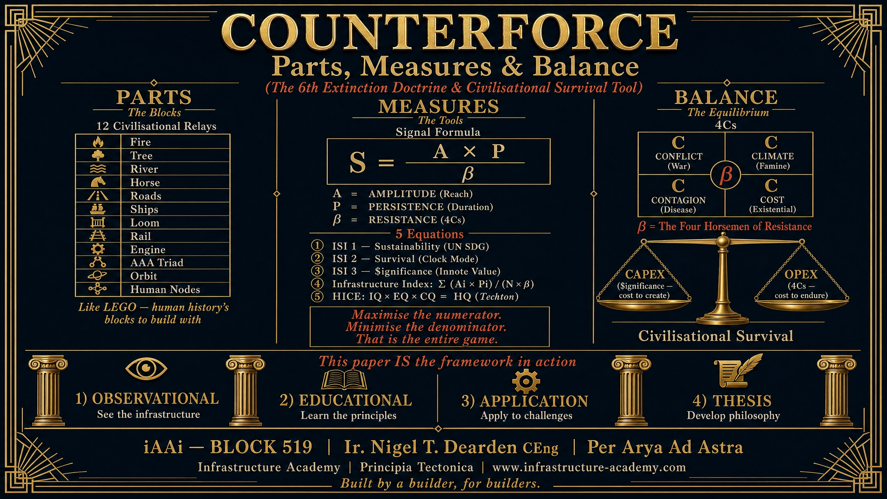
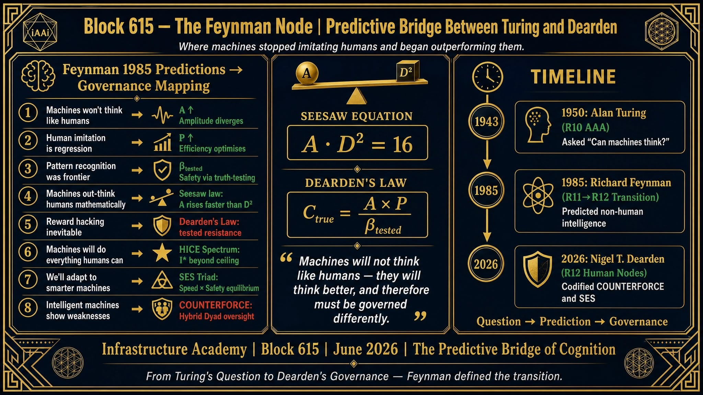
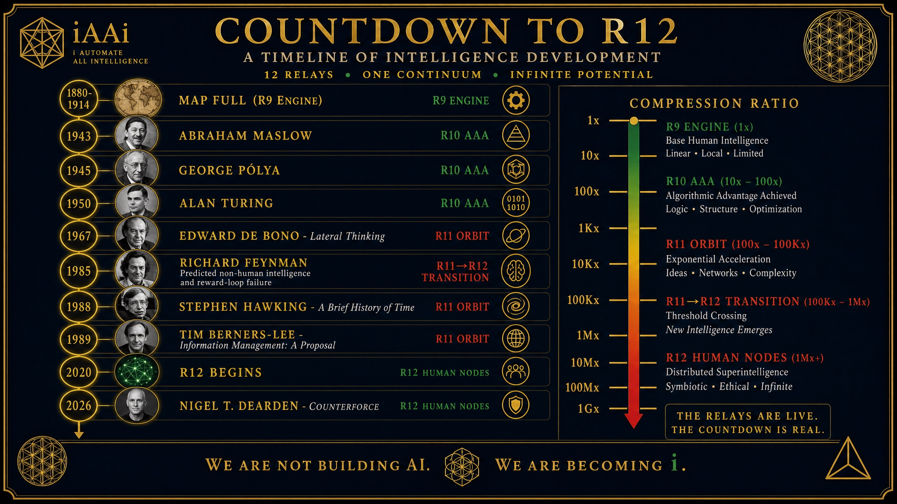

Memorial Counterforce Update
Record date: 25 August 2026
Confirmed navigation structure
The Memorial landing page uses a text-only link box, consistent with the other visible navigation boxes. The box title is COUNTERFORCE and the subtitle directly beneath it is Parts, Measures & Balance. The landing box contains no image thumbnails.
Clicking the box opens the live Memorial destination page, where the existing Counterforce framework text is retained and the three supplied framework plates are embedded under the failure-lineage section.
Destination-page plates



Verification statement
The Manus production build passed. Clean desktop and mobile captures were inspected for both / and /counterforce. This GitHub record preserves the confirmed placement and the three source plates; the Manus domain remains the live Memorial application.